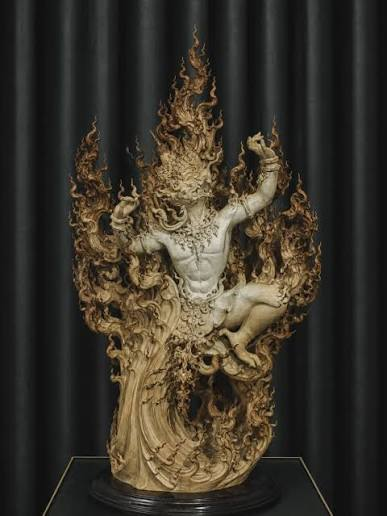

งานประดิษฐ์และงานปั้น (Crafts & Sculpture)

งานประดิษฐ์และงานปั้น (Crafts and Sculpture) เป็นแขนงหนึ่งของทัศนศิลป์ที่เน้นการสร้างสรรค์ผลงานในรูปแบบสามมิติ (Three-Dimensional Form) ซึ่งมีความสำคัญต่อการพัฒนาทักษะทางกายภาพ การรับรู้ทางสุนทรียะ และกระบวนการคิดเชิงนวัตกรรม สามารถจำแนกออกเป็น 2 องค์ประกอบหลักตามลักษณะของวัสดุและวิธีการสร้างสรรค์ ได้แก่ ประติมากรรม (Sculpture) จัดเป็นวิจิตรศิลป์ (Fine Art) ที่เน้นการแสดงออกทางอารมณ์ ความคิดสร้างสรรค์ และสุนทรียภาพเป็นหลัก กระบวนการสร้างสรรค์แบ่งออกเป็นวิธีหลัก ได้แก่ การปั้นพอก (Additive Process) การแกะสลักออก (Subtractive Process) และการหล่อ (Casting) โดยใช้วัสดุที่มีความยืดหยุ่นหรือคงรูป เช่น ดินเหนียว ดินเผา ปูนปลาสเตอร์ โลหะ หรือหิน ผู้สร้างสรรค์ต้องอาศัยความเข้าใจเรื่องโครงสร้างสัดส่วน กายวิภาค ปริมาตร (Volume) และการจัดองค์ประกอบศิลป์ในพื้นที่สามมิติ เพื่อให้ผลงานมีความสมบูรณ์จากทุกมุมมอง งานหัตถกรรมหรือประดิษฐ์กรรม (Crafts) มักถูกจัดอยู่ในกลุ่มประยุกต์ศิลป์ (Applied Art) ที่ให้ความสำคัญกับการผสมผสานระหว่างความงามทางสุนทรียะและประโยชน์ใช้สอย (Form follows function) กระบวนการผลิตมักอาศัยทักษะฝีมือความชำนาญเฉพาะตัว (Craftsmanship) และการประยุกต์ใช้วัสดุหลากหลายประเภท ทั้งวัสดุธรรมชาติ สิ่งทอ ไม้ โลหะ หรือวัสดุสังเคราะห์และวัสดุเหลือใช้เพื่อการพัฒนาอย่างยั่งยืน งานหัตถกรรมสะท้อนถึงภูมิปัญญาท้องถิ่น วัฒนธรรม และอัตลักษณ์ของชุมชน ควบคู่ไปกับการพัฒนาขีดความสามารถทางความคิดสร้างสรรค์และการแก้ปัญหาเชิงโครงสร้าง การบูรณาการเนื้อหาทั้งสองสาขานี้เข้าด้วยกันบนแพลตฟอร์มการเรียนรู้ทางศิลปะ จึงเป็นกลไกสำคัญในการส่งเสริมการเรียนรู้แบบองค์รวม ที่ไม่เพียงแต่มุ่งเน้นทักษะปฏิบัติการ (Practical Skills) ผ่านการสัมผัสวัสดุโดยตรงเท่านั้น แต่ยังช่วยยกระดับความเข้าใจทางทฤษฎีศิลปะ ประวัติศาสตร์ และคุณค่าเชิงวัฒนธรรมของผู้รับสารอีกด้วย